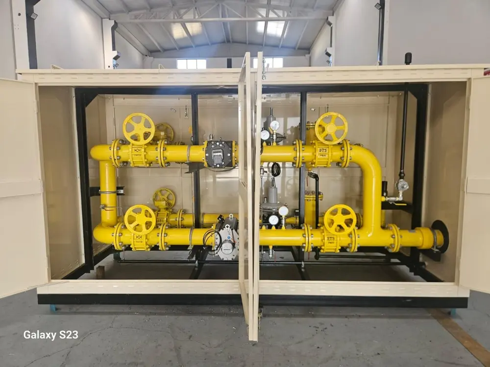

İGDAŞ standartlarına tam uyumlu, yüksek kapasiteli basınç düşürme ve ölçüm istasyonu imalatımız.
Yüksek debili endüstriyel tesisler için hassas regülasyon, maksimum emniyet ve kayıpsız ölçüm teknolojisi.

RMS-C 1600 tipi istasyonlarımız, endüstriyel tüketicilerin anlık gaz ihtiyaçlarını sıfır hata ile karşılamak üzere tasarlanmıştır. Çift hatlı (1 Asıl + 1 Yedek) mimarisi sayesinde kesintisiz gaz akışı garanti altına alınır.
Demir-çelik, çimento ve cam fabrikaları gibi yüksek hacimli anlık gaz tüketen fırın hatları.
Doğalgaz kombine çevrim ve kojenerasyon elektrik üretim tesislerinin besleme hatları.
Organize Sanayi Bölgelerinin ana girişlerinde bölge regülasyon istasyonu olarak görev yapar.
Alışveriş merkezleri, hastaneler ve büyük döküm atölyelerinin merkezi proses hatları.
Gaz Tedarik Sistemleri - Gaz basınç düşürme istasyonları - Fonksiyonel gereksinimler standardına tam uyum.
Giriş basıncı 100 bar'a kadar olan gaz regülasyon tesisleri emniyet ve tasarım kriterleri.
Avrupa Birliği Basınçlı Ekipmanlar Direktifi'ne (PED) uygun kaynak, test ve malzeme sertifikasyonu.
İstasyonlarımız, giriş şebekesindeki agresif yüksek basıncı, tesis içi güvenli çalışma basıncına mükemmel bir kararlılıkla indirger.
| İstasyon Bölümü | Flanş ve Gövde Dayanımı (Nominal) | Operasyonel Basınç Aralığı (Bar) |
|---|---|---|
| Giriş Hattı (Inlet) | ANSI Class 150 (PN16) | 1 Bar — 4 Bar (Orta Basınç Segmenti) |
| Çıkış Hattı (Outlet) | PN16 / ANSI 150 | 0.3 Bar — 1 Bar (Güvenli Endüstriyel Dağıtım) |